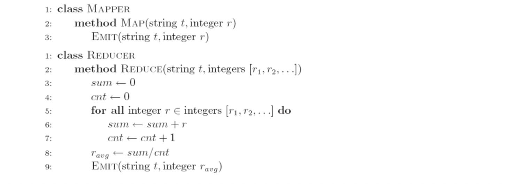
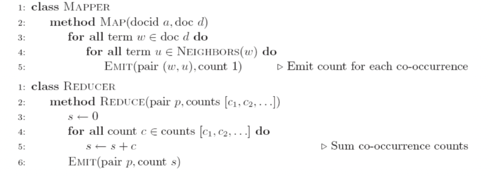

Abstract:
- Design Pattern 1: In-mapper Combining
- Design Pattern 2: Pairs vs Stripes
- Design Pattern 3: Order Inversion
Combiner Function
- To minimize the data transferred between map and reduce tasks
- Combiner function is run on the map output
- Both input and output data types must be consistent with（保持一致） the output of mapper (or input of reducer)
- But Hadoop do not guarantee how many times it will call combiner function for a particular map output record
- It is just optimization
- The number of calling (even zero) does not affect the output of
Reducers
- Applicable on problems that are commutative and associative
- Commutative（交换率）: max(a, b) = max(b, a)
- Associative（结合律）: max (max(a, b), c) = max(a, max(b, c))
Design Pattern 1: In-mapper Combining
Importance of Local Aggregation
- Ideal scaling characteristics:
- Twice the data, twice the running time
- Twice the resources, half the running time
- Why can’t we achieve this?
- Data synchronization requires communication
- Communication kills performance
- How to avoid communication?
- Reduce intermediate data via local aggregation
- in-mapper combining can help!
Example 1: WordCount
WordCount Baseline:
Version 1
这种方法，每执行一次map就new一个Hashmap，将一个document下所有term t都sum到 H{t} 中，然后EMIT(term t, count H{t})。
This mapper use more space to reduce time cost.
- Are combiners still needed?
Yes, one hashmap is applied to one document, and it need to aggregate.
但是由于在combiner中aggregate效率还是不高，所以我们继续改进为in-mapper combining
Version 2: in-mapper combining
这种方法，先new一个总的Hashmap，通过不断的读入documents来不断的将term t的数量sum到这个总的Hashmap的H{t}中。
Example 2: Computing the Mean
Version 1

! WRONG
- Why can’t we use reducer as combiner?
Mean(1, 2, 3, 4, 5) != Mean(Mean(1, 2), Mean(3, 4, 5)) 不满于结合律
Version 2
! WRONG
- Why doesn’t this work?
Combiners must have the same input and output type, consistent with the input of reducers (output of mappers)
Version 3
这个方法是对的，但是有combiner还是不那么高效，可以将其转化为更高效的in-mapper combining
Version 4 : in-mapper combining
How to Implement In-mapper Combiner in MapReduce?
- Lifecycle: setup -> map -> cleanup
- setup(): called once at the beginning of the task
- map(): do the map
- cleanup(): called once at the end of the task.
- We do not invoke these functions
- In-mapper Combining:
- Use setup() to initialize the state preserving data structure
- Use clearnup() to emit the final key-value pairs
Summary
- “In-mapper combining”
- Fold the functionality of the combiner into the mapper by preserving state across multiple map calls
- Advantages
- Speed
- faster than actual combiners(因为in-mapper combining是完全在memory中进行的, no I/O cost)
- Disadvantages
- Explicit memory management required（need for space, 数据量过大的时候，还是需要用combiner）
- Potential for order-dependent bugs
Design Pattern 2: Pairs vs Stripes
Term co-occurrence matrix
- Term co-occurrence matrix for a text collection
- M = N x N matrix (N = vocabulary size)
- Mij: number of times i and j co-occur in some context (for concreteness, let’s say context = sentence)
- specific instance of a large counting problem
- A large event space (number of terms)
- A large number of observations (the collection itself)
- Goal: keep track of interesting statistics about the events
- Basic approach
- Mappers generate partial counts
- Reducers aggregate partial counts
Pairs
- Each mapper takes a sentence
- Generate all co-occurring term pairs
- For all pairs, emit (a, b) → count
- Reducers sum up counts associated with these pairs
- Use combiners!

-
Advantages
- Easy to implement, easy to understand
-
Disadvantages
- Lots of pairs to sort and shuffle around (upper bound?)
- Not many opportunities for combiners to work
Stripes
-
Idea: group together pairs into an associative array
(a, b) → 1 , (a, c) → 2 , (a, d) → 5 , (a, f) → 2
generate: a → { b: 1, c: 2, d: 5, e: 3, f: 2 } (a, e) → 3 -
Each mapper takes a sentence:
- Generate all co-occurring term pairs
- For each term, emit a → { b: countb, c: countc, d: countd … }
-
Reducers perform element-wise sum of associative arrays
-
Advantages
- Far less sorting and shuffling of key-value pairs
- Can make better use of combiners
-
Disadvantages
- More difficult to implement
- Underlying object more heavyweight
- Fundamental limitation in terms of size of event space (Stripe H may be huge)
Pairs vs. Stripes
-
The pairs approach
- Keep track of each term co-occurrence separately
- Generates a large number of key-value pairs (also intermediate)
- The benefit from combiners is limited, as it is less likely for a mapper to process multiple occurrences of a word
-
The stripe approach
- Keep track of all terms that co-occur with the same term
- Generates fewer and shorted intermediate keys
- The framework has less sorting to do
- Greatly benefits from combiners, as the key space is the vocabulary
- More efficient, but may suffer from memory problem
-
These two design patterns are broadly useful and frequently observed
in a variety of applications- Text processing, data mining, and bioinformatics
How to Implement “Pairs” and “Stripes” in MapReduce?
- Process of turning structured objects into a byte stream for transmission over a network or for writing to persistent storage
- Deserialization is the reverse process of serialization
- Requirements
- Compact: to make efficient use of storage space
- Fast: the overhead in reading and writing of data is minimal
- Extensible: we can transparently read data written in an older format
- Interoperable（能共同操作的）: we can read or write persistent data using different language
Writable Interface
Writable is a serializable object which implements a simple, efficient, serialization protocol
1 | public interface Writable { |
- All values must implement interface Writable
- All keys must implement interface WritableComparable
- context.write(WritableComparable, Writable)
- You cannot use java primitives here!!
Stripes Implementation
- A stripe key-value pair a → {b:1,c:2,d:5,e:3,f:2}:
- Key: the term a
- Value:the stripe{b:1,c:2,d:5,e:3,f:2}
- In Java, easy, use map (hashmap)
- How to represent this stripe in MapReduce?
- MapWritable: the wrapper of Java map in MapReduce
- put(Writable key, Writable value)
- get(Object key)
- containsKey(Object key)
- containsValue(Object value)
- entrySet() returns Set<Map.Entry<Writable,Writable>>, used for iteration
Pairs Implementation
- Key-value pair (a, b) → count
- Value: count
- Key: (a, b)
- In Java, easy, implement a pair class
- How to store the key in MapReduce?
- You must customize your own key, which must implement interface WritableComparable!
Design Pattern 3: Order Inversion
Computing Relative Frequencies
- “Relative” Co-occurrence matrix construction
- we take into consideration the fact that some words appear more frequently than others
- Word wi may co-occur frequently with word wj simply because one of the two is very common
- We need to convert absolute counts to relative frequencies f(wj|wi)
- What proportion of the time does wj appear in the context of wi?
- we take into consideration the fact that some words appear more frequently than others
- N(·,·) is the number of times a co-occurring word pair is observed
- The denominator is called the marginal
f(wj|wi): “Stripes”
In the reducer, the counts of all words that co-occur with the conditioning variable (wi) are available in the associative array. Hence, the sum of all those counts gives the marginal.
a→ {b1:3,b2 :12,b3 :7,b4 :1,…}
f(b1|a) = 3 / (3 + 12 + 7 + 1 + …)
Problems:
Memory:所有的stripes的计算在内存中进行
f(wj|wi): “Pairs”
- The reducer receives the pair (wi, wj) and the count
Problems:
It is not possible to compute f(wj|wi) ,cause the marginal(边缘) cannot be computed until you got all counts
Solution 1
Fortunately, as for the mapper, also the reducer can preserve state across multiple keys
- We can buffer in memory all the words that co-occur with wi and their counts
- This is basically building the associative array in the stripes method
We must define the sort order of the pair:
- the keys are first sorted by the left word, and then by the right word
- we can detect if all pairs associated with the word we are conditioning on w(i) have been seen
- At this point, we can use the in-memory buffer, compute the relative frequencies and emit
There is a problem: ((a, b1), {1, 1, 1, …}) and ((a, b2), {1, 1, 1, …}) may be assigned to different reducers.
So we must define an appropriate partitioner to make sure all pairs with the same left word are sent to the same reducer!
(The default partitioner is based on the hash value of the intermediate key, modulo the number of reducers)
Still suffer from the memory problem!
Solution 2: Order Inversion
我们先将计算好的marginal先传给reducer（pair(wi, *), all_count），再将各个单词对及其出现次数(pair(wi, wu), count)传输给reducer进行词频计算（即 frequency_of_(wi, wu) = count/all_count）。
- The mapper:
- additionally emits a “special” key of the form (wi, ∗)
- The value associated to the special key is one, that represents the contribution of the word pair to the marginal
- Using combiners, these partial marginal counts will be aggregated before being sent to the reducers
- The reducer:
- We must make sure that the special key-value pairs are processed before any other key-value pairs where the left word is wi (define sort order)
- We also need to guarantee that all pairs associated with the same word are sent to the same reducer (use partitioner)

- Memory requirements:
- Minimal, because only the marginal (an integer) needs to be
stored - No buffering of individual co-occurring word
- No scalability bottleneck
- Minimal, because only the marginal (an integer) needs to be
- Key ingredients for order inversion
- Emit a special key-value pair to capture the marginal
- Control the sort order of the intermediate key, so that the special key-value pair is processed first
- Define a custom partitioner for routing intermediate key-value pairs
How to Implement Order Inversion in MapReduce?
Implement a Custom partitioner
- You need to implement a “pair” class first as the key data type
- A customized partitioner extends the Partitioner class
1 | public static class YourPatitioner extends Partitioner<Key, Value>{ |
- The key and value are the intermediate key and value produced by the map function
- In the relevant frequencies computing problem
1 | public static class FirstPatitioner extends Partitioner<StringPair, IntWritable>{ |
- It overrides the getPartition function, which has three parameters
1 | public int getPartition(WritableComparable key, Writable value, int numPartitions) |
- The numPartitions is the number of reducers used in the MapReduce program and it is specified in the driver program (by default 1)
- In the relevant frequencies computing problem
1 | public int getPartition(StringPair key, IntWritable value, int numPartitions){ |